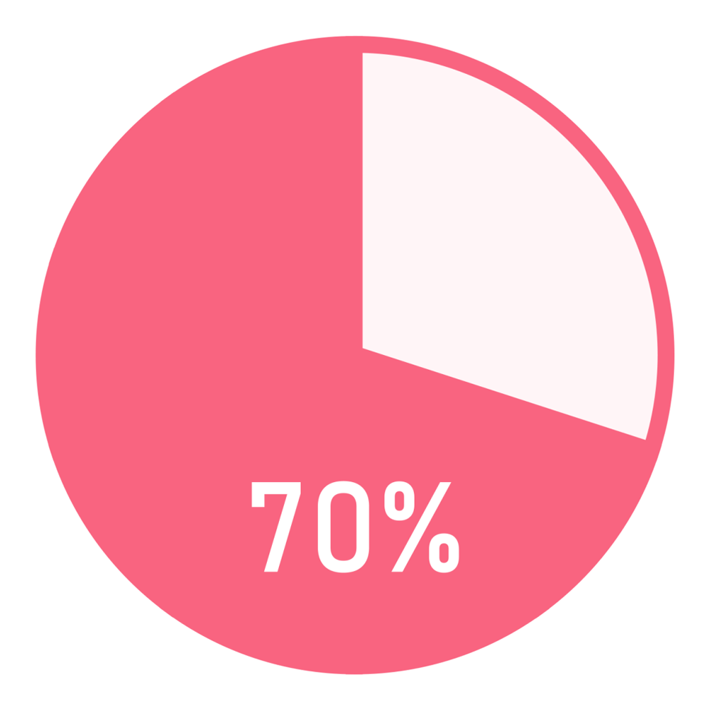

コールセンターのお仕事の内容から、勤務を通じて見つけられるスキルのこと、研修内容について、勤務時の服装などをわかりやすく説明いたします。
受信はお客様からの電話に応対し商品などの説明、受注や予約・各種お問合せの対応などを行い、発信はお客様に電話をかけ商品に対する関心の有無の確認します。座って電話の受け答えをするのが職務内容であるため、初めてオフィスワークをする方やお話をするのが好きな方に人気の職種です。また、シフト制や残業なしのところも多いので自分の時間を確保したい方も多く働かれています。
コールセンター業務におけるインバウンドという言葉は、お客様からの電話を受信することを表しています。電話をかけるのではなく、お客様から電話がかかってくるのを待ち、対応することを表します。
インバウンド業務は、電話をかけてくる対象者が不特定多数な上、一定スキル・知識をクリアした人材のみ対応できるのが基本です。平たく言うと、どんな人が、何の目的／要件で、電話をかけてきたのか電話に出て初めて判別できるため、インバウンド業務のオペレーターは、『業務知識や対応範囲に広く対処するオールマイティな業務スキル』が求められます。
このため、窓口デビューするまでに予め覚える「業務知識」や「対応内容・処理フロー」が広範囲にわたり、初期研修（座学研修・OJT）のボリュームが一般的に多くなるのが特徴です。さらに、デビュー後もモニタリングやコーチングを繰り返し実施し、トークスキルや生産性指導（KPI)の向上を継続的に目指すことが求められます。
コールセンター業務におけるアウトバウンドとは、発信業務ともいわれ、企業から顧客へ情報を発信する仕組みです。
アウトバウンド業務は、目的に沿ってこちらから対象者へアプローチするため、計画的に業務を組み立てやすいのが特徴です。また、一つの案件・キャンペーン毎に、期限が決まっているケースが多いかと思います。覚える「業務知識」と答えるべき「内容・範囲」が絞られており、決められたスクリプトに沿って業務を進めるため、比較的初期研修のボリュームは少ないことが多いでしょう。
大規模なコールセンターでは、ダイヤラーと呼ばれる自動発信システムを用いた業務効率化が進んでおり、短い期間で機械的に対話～完了させる大量発信業務が可能である場合が多いです。
コールセンターのお仕事は、電話をかけるアウトバウンドと、電話を受けるインバウンドに大きく分かれます。それぞれの仕事には特徴があり、見つけられるスキルも異なってきます。いずれも、基本的な電話応対のスキル以上のものを身につけることが可能な職種です。
発信業務、アウトバウンドとは、アンケートや営業の電話をする仕事です。お客様にすぐ電話を切られないようにするためには、マニュアル以上の会話をして相手を引きつける工夫が必要です。
相手の反応を感じ取りながら話をすすめて本題へとつなげる、という対応を繰り返す中で、会話力が身についていきます。会話力は、社会に出た時に営業の仕事の中でも役立てられるでしょう。
受信業務、インバウンドは、企業の商品やサービスに対する問い合わせなどがメインの業務となるため、商品やサービスについて、事前によく知っておいた上で、相手にわかりやすく説明できるように準備しておく必要があります。
自分が知っていることをわかりやすく相手に伝えるというのは、思っている以上に難しいものです。しかし、相手が必要としている情報を把握した上で、誰に対してもきちんと説明できるようになれば、営業の仕事の際に、商品の魅力を正確に伝えられるようになるでしょう。
クレーム対応は、お客様からの苦情を的確に受け付ける業務です。心を込めて謝ることは大切ですが、コールセンターにはノウハウが蓄積されているので、対応方法について所定のマニュアルがあります。また、お客様に応じて対応を変える必要があるため、クレーム処理のノウハウと、柔軟な対応力を身につけることができるのです。
正確で丁寧な言葉遣いはもちろんのこと、たとえお客様が怒っていたとしても、「どのような応対をすればお客様にご理解いただけるのか」と考えることが大切です。快く納得してもらうためにも常に相手の言葉に耳を傾け、こちらも真摯に対応していることを理解して貰う必要があるでしょう。
クレーム対応は、マニュアルにない対応を迫られるときや、予期していなかったことが往々にして起こります。一つひとつの言葉へ丁寧な対応を重ねていくことで、どのようなときでも冷静に判断できる力が身につくでしょう。
お客様からのいろいろなお問い合わせに対応するコールセンターは会社の顔そのもの。会社の顔としてお客様と接するコールセンタのお仕事なら、研修や日々の業務を通して、正しい日本語や敬語の使い方など、一流のビジネスマナーを身につけることができます。
美しい話し方、相手に好印象を与えるトークなど、ビジネスの場はもちろん、プライベートでも、あなたの魅力をさらにアップさせてくれるでしょう。
実は、コールセンターの仕事をはじめるスタッフ様の中には、パソコンが苦手、という方が多かったりします。
「いずれは事務職に挑戦したいけど今はちょっと自信がなくて…」という方にピッタリなのが、コールセンターのお仕事なのです。
殆どの業務で履歴入力やエクセルを使う書類の作成などがあるため、パソコンスキルの基本を身につけることができます。

約70％の方が未経験からスタートしています。
（オープンループパートナーズ2018年実績より）
未経験でも大丈夫。約70％の方が未経験からスタートしています。まったく違う職種への転職の方や、復職の方でもしっかりとした研修があるから、未経験でも安心して働けます。
コールセンターで働く先輩の声
企業によって内容や期間が異なりますが、基本的には以下のような流れです。
コールセンターでは、お客様との直接の対面がないので、自由なファッションを楽しみながら働くことが可能です。女の子らしいガーリーなファッションやロックなファッション、ラフなファッションなど、みなさんおしゃれも楽しみながらお仕事をされている印象があります。あなたも好きなファッションで働いてみませんか。
株式会社オープンループパートナーズ
(本社所在地)
〒160-0022
東京都新宿区新宿4-3-17
FORECAST新宿SOUTH7階